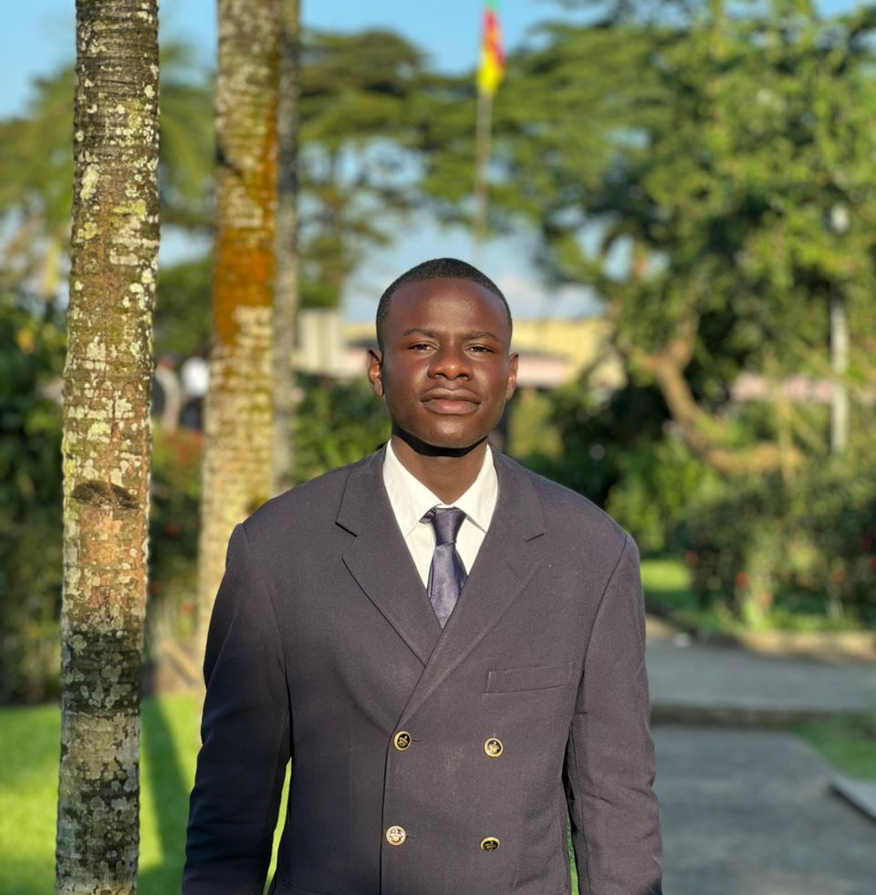

Étudiant en DUT Génie Informatique | IUT de Douala
Je m'appelle Ndjimeli Pinne Loïc, étudiant en première année de DUT Génie Informatique à l'IUT de Douala. Passionné par l'informatique, je me forme aux domaines des réseaux, de la programmation et du développement web.
2021 - 2022
série : All
2023 - 2024
série : C
2024 - 2025
série : C
2025 - 2026
Formation couvrant les systèmes d'exploitation, les réseaux, la programmation C, les bases de donnée et le développement web
une application qui va mettre en relation les étudiants et les structures de formation qui permettra aux étudiants de trouver les stages académiques en fonction de leurs filières
Plate-forme digitale de vente et distribution de produits biologiques certifiés à Douala Projet complet incluant une analyse SWOT/PESREL, une maquette HTML/CSS et un cahier de charges
Voir la maquette Voir le cahier de chargesEmail : loicndjimeli@gmail.com
Tel :+237673650466 / +237658132072
Localisation : Douala, Cameroun